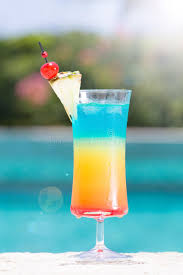
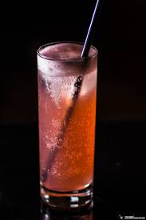
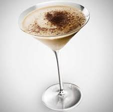
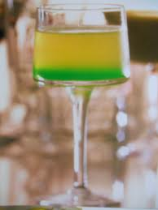
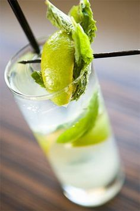
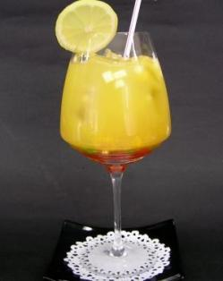
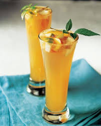
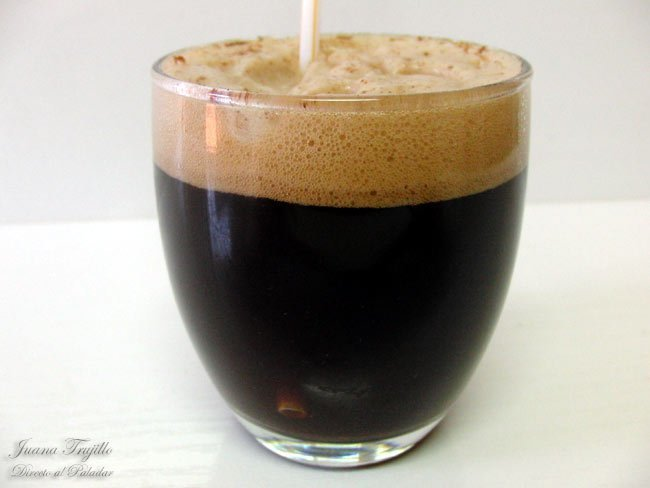
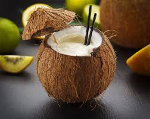
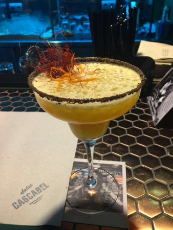

Recetas
ARCO IRIS
Ingredientes
- 2 1/2 onzas de brandy
- 1 1/4 onzas de chartreause verde
- 1 1/4 onzas de chartreause amarillo
Preparacción
En la coctelera con hielo, agitar bien los ingredientes y colar sobre copa de coctel. Decorar con una guinda roja y otra verde.
APRICOT COOLER
Ingredientes
- 1/4 onza de apricot brandy
- 1 onza de jugo de limón
- 3/4 onza de granadina
- Ginger-ale. cantidad necesaria
Preparacción
En vaso alto, remover y completar con ginger-ale. Servir con pitillo.
BRANDY ALEXANDER
Ingredientes
- 1 onza de brandy o coñac
- 1 onza de cacao oscuro
- 1 onza de crema de leche
- Nuez moscada o canela
Preparacción
Preparar en coctelera con hielo.
Agitar bien, colar y servir en copa de champaña.
Espolvorear con nuez moscada.
BEER PUNCH
Ingredientes
- 1/4 litro de cerveza
- 1/4 onza de anís seco
- 6 yemas de huevo
- 3 onzas de sirope o almibar
Preparacción
En una ponchera batir inicialmente las yemas de huevo con el almíbar, adicionar luego el anís y la cerveza. Remover bien y servir en vaso alto. Decorar costillas de canela.
MITI-MITI
Ingredientes
- 6 onzas de cerveza rubia
- 6 onzas de cerveza negra
Preparacción
Preparar en jarro de creveza.
Las dos crevezas deben estar muy frias.
BEER GREEN
Ingredientes
- Cerveza rubia
- 1 onza de curaçao azul
Preparacción
Preparar en vaso alto provisto de 2 ó 3 cubos de hielo.
Completar con cerveza rubia.
Decorar con un trozo de limón.
BOMBAY
Ingredientes
- 3/4 onza de coñac
- 1/2 onza de vermut seco
- 1/2 onza de vermut rojo
- 1/2 onza de Pernod
- 1/2 onza de curaçao
Preparacción
Preparar en vaso mezclador con hielo, batirbien y colar.
Servir en vaso de coctel.
CUELLO DE CABALLO
Ingredientes
- 1 -1/4 onzas de coñac
- Ginger-ale
Preparacción
Colocar en vaso alto una espiral de corteza de limón y sujetarla con cubitos de hielo; añadir el coñac y completar con ginger-ale.
LADY LOVE
Ingredientes
- 1 onza de coñac
- 1 onza de oporto
- 1 onza de curaçao
- 1/4 onza de crema de menta blanca
- 1/2 onza de jarabe de frambuesa
Preparacción
Preparar en coctelera con hielo, agitar, colar y servir en copa de coctel con 2 ó 3 cerezas.
ÁNGEL CAÍDO
Ingredientes
- 3 onzas de ginebra
- 2 gotas de crema de menta
- 1 gota de angostura
- 1 onza de jugo de limón
Preparacción
Preparar en la coctelera.
Agitar y servir en copa de coctel
ROYAL FIZZ
Ingredientes
- 2 onzas de ginebra
- 1 onza de granadina
- 2 onzas de sirope o almibar
- 1 huevo
- 1 onza de jugo de limón
Preparacción
Batir en la coctelera con hielo, colar y pasar a vaso grande.
llenar con soda.
Servir con pitillos.
GIN SOUR
Ingredientes
- 2 onzas de ginebra
- 1 onza de sirope o almibar
- 1 onza de jugo de limón
Preparacción
En la coctelera con hielo, agitar, pasar a vaso largo, adicinar frutas de temporada
picadas.
Llenar con agua de Seltz, Cristal o Perrier.
Servir con pitillos
TENTACIÓN

Ingredientes
- 2 onzas de ron blanco
- 3/4 onza de licor de manzana
- 1/2 onza de vermut seco
Preparacción
Preparar en la coctelera con hielo.
Agitar, colar y servir en copa de coctel.
Decorar con corteza de limón.
RON SODA
Ingredientes
- 2 onzas de ron
- 1/4 onza de curaçao
- 1/4 onza de Chartreuse
- 1/2 onza de sirope o almibar
- 1 onza de jugo de limón
Preparacción
Prepara en vaso alto con hielo picado.
Mezclar y completar con soda.
DIABLO FELIZ

Ingredientes
- 1 onza de ron
- 1 onza de ginebra
- 1 onza de Cointrau
- 1/3 onza de jugo de limón
Preparacción
Preparar en coctelera, agitar y servir en vaso medio con hielo.
MARGOTH BLUE
Ingredientes
- 2 onzas de tequila
- 2 onzas de jugo de limón
- 1 onza de curaçao
Preparacción
Preparar en la coctelera con hielo.
Agitar y colar en copa de coctel.
PA' MACHOS
Ingredientes
- 4 onzas de tequila
- 1 onza de jugo de limón
Preparacción
Prepara en vaso mezclador con hielo.
Colar en copa de coctel con borde escarchado de sal.
Completar con soda.
Colocar con chile (ají) pequeño dentro de la copa para decorar.
TORO BRAVO

Ingredientes
- 2 onzas de tequila
- 2 onzas de licor de café
Preparacción
Preparar en vaso medio provisto de 2 ó 3 cubos de hielo
BÁLSAMO
Ingredientes
- 2 onzas de jerez
- 3/4 onzasde jugo de naranja natural
- 1/2 onza de licor de naranja
- 2 rodajas de naranja
Preparacción
Revolver bien en copa de coctel.
Decorar con una espiral de corteza de limón.
DELICADO
Ingredientes
- 3 onzas de jerez seco
- 1 onza de vermut rosé
- 3 gotas de angostura
Preparacción
Preparar en vaso mezclador con hielo.
Mezclar bien y colar en copas de coctel.
BAMBÚ
Ingredientes
- 1 onza de jerez
- 1 onza de vermut seco
- 1 gota de bitter de naranja
Preparacción
Preparar en copa de coctel.
Revolver con barrita mezcladora y decorar
con una espiral de corteza de limón.
BLOODY MARY
Ingredientes
- 2 onzas de vodka
- 1/4 onza de jugo de limón
-2 gotas de ají tabasco
- 4 gotas de salsa worcestershire o inglesa
- Sal y pimienta al gusto
Preparacción
Preparar un vaso alto proviste de 2 ó 3 cubo de hielo.
Completar con jugo de tomate.
Remover
con cuchara y decorar con un trozo de tallo de apio y un tomate pequeño.
CASABLANCA VODKA

Ingredientes
- 1/2 onza de Galliano
- 1/2 onza de vodka
- 1/2 onza de jugo de aguacate
- 1/3 onza de jugo de limón
- 1/3 onza de jugo de naranja
Preparacción
Preparar en coctelera con hielo.
Agitar, colar y servir en copa de coctel
provisto de un fondo de hielo frappé.
HORA DE LA PAZ

Ingredientes
- 1 onza de vodka
- 1 onza de bourbon (whisky estadounidense)
- 1/2 onza de limón
- 2 ramitas de menta fresca
Preparacción
Preparar directamente en vaso alto con hielo.
Completar con infusión de tilo frío.
Remover y adornar con las ramitas de menta.
INK STREET
Ingredientes
- 1 onza de whisky
- 1 onza de jugo de limón
- 1 onza de jugo de naranja
Preparacción
Preparar en la coctelera con hielo.
Agitar bien, colar en copa de coctel.
MANHATTAN DULCE
Ingredientes
- 2 onzas de whisky
- 1 onza de vermut dulce
- 1 gota de angustura
Preparacción
Preparar en copa de coctel.
Revolver y decorar con una cereza.
TREBOL
Ingredientes
- 1 onza de whisky
- 1 onza de vermut seco
- 3 gotas de Chartreuse verde
- 3 gotas de crema de menta verde
Preparacción
Preparar en copa de coctel.
Mezclar bien.
ANGEL KISS
Ingredientes
- 2 onzas de crema de cacao
- 1 onza de crema de leche (no espesa)
Preparacción
Preparar en copa flauta.
Servir con pitillo.
GHOST
Ingredientes
- 1 onza de triple seco
- 1/2 onza de vodka
- 1/2 onza de vermut seco
- 3 gotas de granadina
Preparacción
Preparar en vasa mezclador con hielo.
Remover y colar en copa de coctel
MENTA MOCA
Ingredientes
- 1 onza de licor de café
- 1 onza de crema blanca de menta
- 1 onza de crema blanca de cacao
Preparacción
Preparar en la coctelera.
Agitar.
Servir en copa coctel provista de unos trocitos de hielo.
ACAPULCO DORADO
Ingredientes
- 2 onzas de cre de coco
- 6 onzas de jugo de pña
- 1onza de jugo de pomelo
- 2 onzas de crema de leche
Preparacción
Preparar en coctelera con hielo picado.
Vaciar en copa balon grande
GRIEGO
Ingredientes
-4 onzas de jugo de melocotón
- 2 onzas de jugo de naranja
- 1 onza de jugo de limón
Preparacción
Preparar en vaso mezclador con hielopicado.
Servir en vaso alto
y adiccionar 4 onzas de soda.
Decorar con fruta fresca.
ZUAVO
Ingredientes
- 5 onzas de café (tinto) frío
- 2 onzas de sirope o almibar
Preparacción
Preparar en vaso alto y completar con limonada gaseosa bien fría.
COCO TROPICAL
Ingredientes
- 1 onza de aguardiente
- 1 onza de agua de coco
- 1 onza de leche de coco
- 3 gotas de limón
- 1/2 onza de sirope
Preparacción
Preparar en la coctelera con hielo picado, agitar y servir en medio coco
previamente enfriado en la nevera.
Decorar con una sombrilla de papel.
Servir con pitillos.
CORRECAMINOS
Ingredientes
- 2 onzas de vodka
- 1 onza de amaretto
- 1 onza de leche de coco
Preparacción
En la coctelera con hielo, agitar hasta que este bien frío.
Colar en copa
de coctel y espolvorear con nuez moscada.
PIÑA COLADA

Ingredientes
- 3 onzas de ron
- 2 onzas de crema de coco
- 4 onzas de jugo de piña
Preparacción
Preparar en vaso mezclador con 2 cucharas de hielo triturado.
Revolver
y servir en vaso mediano, aunque lo ideal es utilizar una base de corteza de piña
ahuecada decorada con sombrillas de papel, trocitos de frutas, etc.
Colocar pitillos